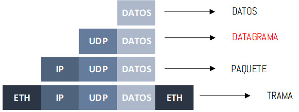

¿QUÉ ES UDP?
El protocolo de datagramas de usuario, abreviado como UDP, es un protocolo que permite la transmisión sin
conexión a datagramas en redes basadas en IP. Para obetener los servicios deseados en los hosts de destino,
se basa en los puertos que están listados como uno de los campos principales en la cabecera UDP. Como muchos
otros protocolos de red, UDP pertenece a la familia de protocolos de Internet, por lo que debe clasificarse
en el nivel de transporte y, en consecuencia, se encuentra en una capa intermedia entre la capa de red y la
capa de aplicación.
¡Nota!
El protocolo UDP es una alternativa directa al protocolo más utilizado, el TCP, aunque ambos se diferencian
sobre todo en un punto:mientras que la transmisión en el protocolo TCP tiene lugar una vez se ha producido
el enlace obligatorio de 3 vías (con acuse de recibo mutuo entre el emisor y el receptor, incluida la
sesión de comunicación), el protocolo UDP no utiliza este procedimiento con el fin de mantener el tiempo de
transmisión lo mas bajo posible.
Mediante el protocolo de datagramas de usuario, una aplicación puede enviar información muy rápidamente, ya
que no es necesario establecer una conexión con el receptor ni esperar una respuesta. Sin embargo, no hay
garantía de que los paquetes vayan a llegar completos y respetando el orden en el que fueron enviados. Además,
este protocolo no ofrece ninguna protección frente a la alteración o acceso por parte de terceros. Sin embargo, el
UDP puede añadir opcionalmente una suma de verificación (que es obligatoria en IPv6) que permite detectar los
paquetes defectuosos.
Definición
El UDP (User datagram protocol) es un protocolo sin conexión de la familia de protocolos de Internet que
funciona en la capa de transporte y fue especificado en 1980 en la RFC (Request for Comments) 768. El
protocolo UDP se utiliza para transmitir datagramas de form rápida en redes IP y funciona como una
alternativa sencilla y sin retardos del protocolo TCP. Se usa principalmente para consultas DNS, conexiones
VPN y para el streaming de audio y vídeo.
CARACTERÍSTICAS UDP
·Protocolo Best-efford
UDP es un protocolo no confiable, debido a que no existen reconocimientos de los datos que estamos enviado al
destino a comparación de TCP. Cuando una computadora envía un paquete al servidor como vemos en la imagen 4, el
servidor no responde con un reconocimiento de que efectivamente recibió el paquete. Se pueden enviar 5 paquetes
diferentes y no se obtendrá ningún reconocimiento de esos 5 paquetes, por lo tanto, no sabes si llegaron a su
destino y a UDP no le interesa si se pierden o no y por supuesto no los envía nuevamente.
 ¿Qué hacemos en el caso que se pierda un paquete en la red?, pues la tarea recae sobre el protocolo de la capa de
aplicación y sus mecanismos para lidiar con las pérdidas de datos.
¿Qué hacemos en el caso que se pierda un paquete en la red?, pues la tarea recae sobre el protocolo de la capa de
aplicación y sus mecanismos para lidiar con las pérdidas de datos.
·Encapsulación UDP
La información que se genera en la capa de aplicación, es entregada en bloques discretos de bytes al protocolo de la
capa de transporte, UDP encapsula esos datos (bytes) recibidos con su propio header, sin embargo cuando se utiliza
UDP ya no se denominan segmentos a comparación de TCP, ahora se denominan datagramas. Los datagramas son
enviados a la capa de red, la capa de red añade su header y los datagramas se convierten en paquetes. Finalmente
los paquetes son enviados a la capa de enlace de datos donde se convierten en tramas.

·Entrega de Datagramas
Cuando los datagramas son enviados al destino, el protocolo UDP en el dispositivo de destino no los ordena, es decir
que los datos contenidos en los datagramas son entregados a la aplicación en el orden que llegan. Es tarea de la
aplicación ordenar los datos si así lo requiere.
·Connectionless y control de flujo y congestión
UDP es un protocolo conectionless, esto significa que no hay un establecimiento de conexión con el dispositivo de
destino, no existe el proceso 3-WAY HANDSHAKE que existe en TCP, ni tampoco existe un cierre de la sesión. Por otro
lado ningún dispositivo toma acción respecto a la congestión o al control de flujo que se deba realizar en la red.